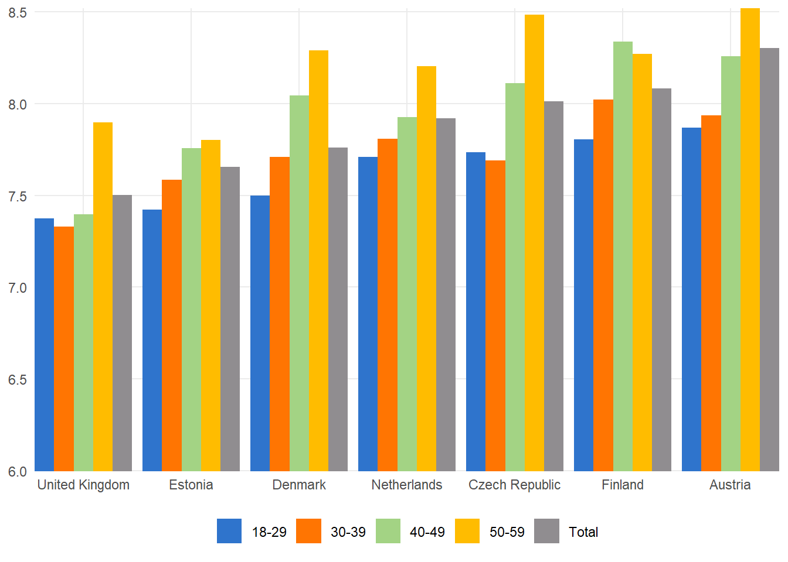

library(tidyverse)
# Points digitized manually using
# https://web.eecs.utk.edu/~dcostine/personal/PowerDeviceLib/DigiTest/index.html
# Data uploaded to a gist
digi <- read_csv(
"https://gist.githubusercontent.com/ikashnitsky/8cc26eab8165b0b79f67da761aa66a1e/raw/8d44c9e6ddea51de3cbb0fdb742fb75a62a307fd/data.csv",
col_names = c("x", "happiness")
)
# get all combinations of the categories and attach the digitized data
df <- crossing(
country = c("United Kingdom", "Estonia", "Denmark", "Netherlands", "Czech Republic", "Finland", "Austria") |> as_factor(),
group = c("18-29", "30-39", "40-49", "50-59", "Total")
) |>
mutate(happiness = digi |> pull(happiness))Rotate the damn plot
r
dataviz
trick
Several days ago I saw a post on LinkedIn by Jornt Mandemakers with some very curious results from Gender and Generations Programme surveys. While representing interesting data, it was a perfect example of a way too common academic dataviz fallacy, and I decided to finally write this blog post.
Here is the original plot by Jornt.

We are going to replicate it and then redo – all in hope to illustrate how much it can be improved with very very simple alterations. In fact, this post revives the argument I made in an earlier post called Dotplot – the single most useful yet largely neglected dataviz type. Despite the nice title and the same main message, I’m afraid the older post used a less indicative example. So I hope this time I’ll manage to illustrate the key message a bit clearer. But the message itself stays the same – forget multi-category bar/column plots and use dotplots instead. Or, put it the other way around: whenever you are visualizing a continuous measurement split into multiple categories, place the continuous variable on the horizontal (x) axis and the categorical variable on the vertical (y) axis. That’s it. Just a simple trick improves the readability of your plot a lot.
Unfortunately, the use of crumpled multi-category bar plots is very widespread in academic papers. Have a look at a Google Lens search on the focal plot in this post. Google Lens browses the internet for similarly looking images, and they are plenty, most of them coming straight from academic papers.

Rotate the damn plot
Over years of teaching dataviz to researchers I came to understanding that this particular mistreatment of data may be the most common and easily avoidable dataviz fallacy. Another dated attempt to spread this simple knowledge yielded an educational datatviz aimed at the general audience. Here it is.
As you can see, much better readable text is what we immediately get via such a simple alteration of the dataviz, just Rotate the damn plot. There are several more equally simple dataviz rules/principles that I keep teaching and want to write-up better here in future. If you are interested, follow the dedicated BlueSky account @damnplot.ikashnitsky.phd, I have big plans for it.
Okay. Enough with the lengthy intro. Let’s replicate the plot from the very beginning of the post and then improve it.
Digitizing the data
But first we need the data from the plot. Of course, I could have taken it from the original source, Gender and Generations Programme. Or I could have asked the authors to share only the data used for this plot. But for simple plots that use a handful of data points there is a better alternative – digitizing the values from the plot itself. There are numerous software solutions that streamline the task, including an R package {digitize}. This time I used the brilliant WebPlotDigitizer. The idea of digitizing is very straightforward – we read the actual values from a plot and thus convert the image into data underlying it. To do that we only need to provide the information about the coordinates of the plot grid.

Then the remaining task is to click all the data points in already known coordinate space.
Just 35 clicks, and we are ready to export a clean CSV file with the data of the plot. For replicability of this post I uploaded the data and code to a gist.
Funny enough, I tried to set various LLMs to do the job for me, and some of them even happily reported the extracted data. I was impressed. Really impressed. Until I figured out that, once again, bullshitters are gonna bullshit. All the so called digitized data happened to be approximate guesses of varied wildness. I’m pretty sure that this not so complex task can be reasonably automated. But so far the mainstream LLMs consistently failed to do this. Here is a sneak-peek of my discussion with Claude. Everything is really impressive until you check closely.

Replicating original plot
Having digitized the data manually, we are now good to go and finally replicate the original plot.
The following lines of code retrieve and reshape the data
Now we have the dataset ready to be plotted. First, let’s try to recreate the original plot as closely as we can. Note that I use exactly the same colors, which I picked from the original plot using a color picker tool. I also tried to outsource this simple task to LLMs. Yes, you guessed it right – they failed.
# recreate the plot
df |>
ggplot(aes(x = country, y = happiness, fill = group))+
geom_col(position = position_dodge()) +
labs(
x = NULL,
y = NULL,
fill = NULL
) +
coord_cartesian(ylim = c(6, NA), expand = 0)+
scale_fill_manual(values = c("#2f74cc", "#ff7502", "#a3d384", "#ffbc00", "#908d90"))+
theme_minimal()+
theme(
legend.position = "bottom",
panel.grid.minor = element_blank()
)
Here I’ll briefly mention that there are more common issues with this particular plot. As a general rule think of any of your plots to be self-sufficient if just posted on social media without any additional context. Thus, it’s always a good idea to add a brief meaningful title, label the axes properly, explain the legend, and maybe add a few annotations.
Improving the plot
The following lines of code take care of {ggplot2} theme, setting it to the one with my preferred selection of options. Earlier I wrote a dedicated blog post about this portable theming solution.
# custom theming
devtools::source_gist("653e1040a07364ae82b1bb312501a184")
sysfonts::font_add_google("Atkinson Hyperlegible", family = "ah")
theme_set(theme_ik(base_family = "ah", base_size = 11))And finally the improved version of the plot.
# Create the plot
df |>
ggplot(aes(y = country, x = happiness, color = group))+
geom_point(size = 3) +
labs(
title = "How happy are you with your home?",
subtitle = "Happiness scores from Generations and Gender Programme surveys\non a scale of 0 to 10",
x = NULL,
y = NULL,
color = "Age group"
) +
scale_color_manual(values = c("#2f74cc", "#ff7502", "#a3d384", "#ffbc00", "#908d90"))+
theme(
legend.position = "bottom",
panel.grid.minor.x = element_blank(),
axis.text.y = element_text(size = 12)
)+
scale_x_continuous(position = "top")
Note that the essential difference here is that I switched the axes effectively rotating the damn plot. I also used dots instead of filled bars. There is a great advantage in doing this, which is nicely illustrated by this plot. Using dots allows to trim the continuous axis to zoom closer to the data. When you do the same to a bar plot, the visual representation ofthe data gets distorted via the disproportional changes to the areas of the filled bars. Claus Wilke points this out and explains more in his brilliant dataviz book.
One important limitation of bars is that they need to start at zero, so that the bar length is proportional to the amount shown.
And of course I added a title, subtitle, and legend caption. Note also a small handy trick that I use all the time – I moved x-axis labels to the top of the plot which allows me to use the subtitle as the axis label and not only save some space but also make the process of reading the plot more straightforward.
Let me conclude with just reiterating that it is hard to overestimate how important is text in dataviz. It should be meaningful and sufficiently detailed, easily readable (i.e. necessarily horizontal and large enough), preferable using some nice font. Pay attention to the text elements of you dataviz!
This post is the first in the Damn Plot series. Other posts will follow, for now you may follow @damnplot.ikashnitsky.phd BlueSky account.